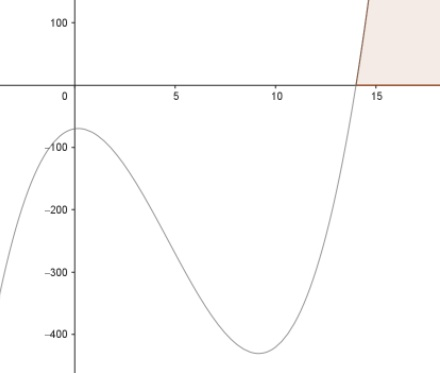

Aufgabe 60 Bestimmen Sie die Lösungsmenge der Ungleichung für x ∈ ℝ: (x - 14)(x² + 5) > 0, ist dann der Fall, wenn x - 14 > 0 --> x > 14 x² + 5 > 0 gilt für alle x ∈ ℝ (x - 14)(x² + 5) > 0 trifft zu für L = x > 14 ∩ x ∈ ℝ L = x > 14 Alternativlösung: Nullstellen von (x - 14)(x² + 5) = 0 x - 14 = 0|+14 x1 = 14 x² + 5 = 0 |-5 x² = - 5 --> keine weiteren Nullstellen Die Funktionswerte größer als 14 liegen oberhalb der x-Achse, erfüllen also die Bedingung (x - 14)(x² + 5) > 0. L = x > 14
